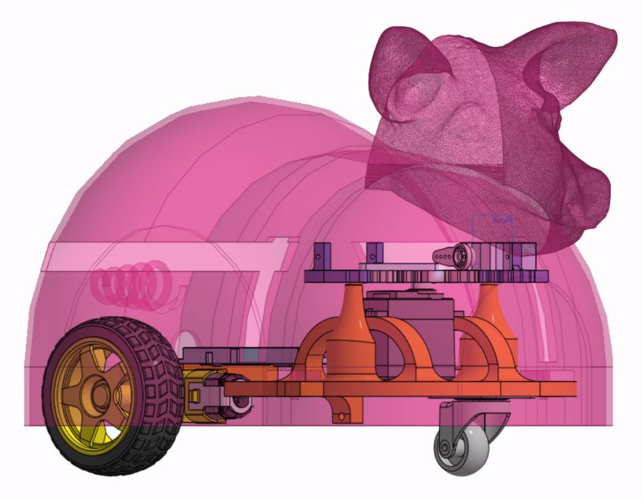
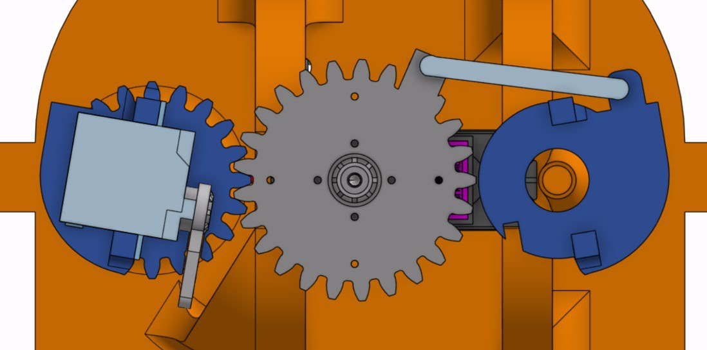
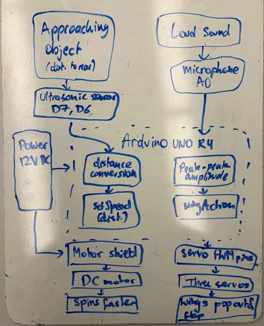
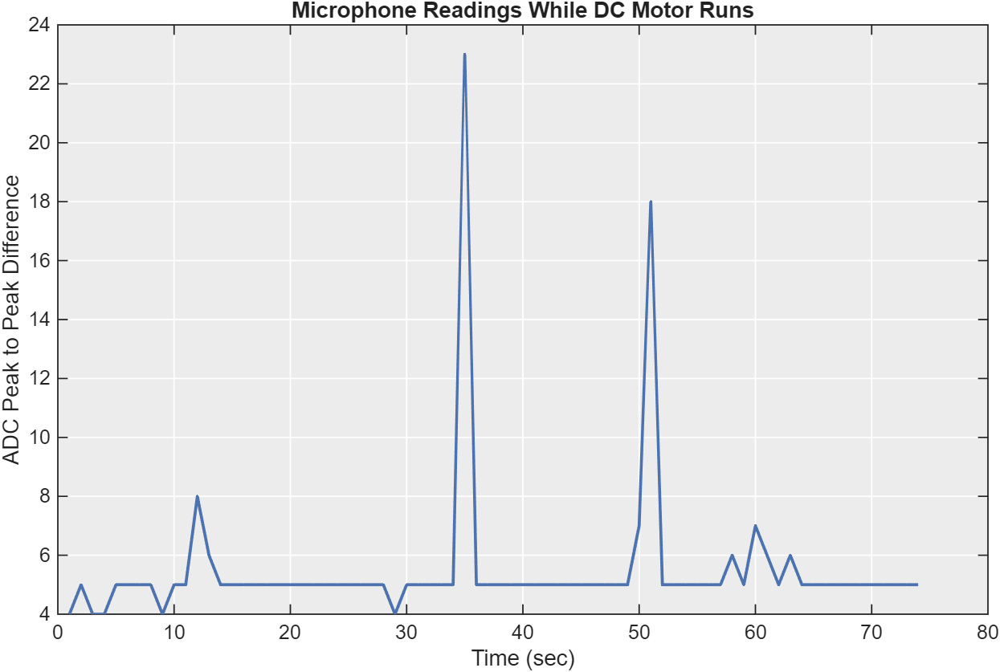
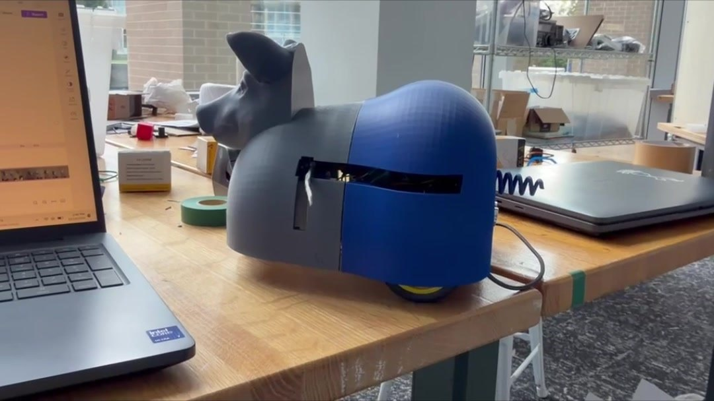

Peric the Flying Pig
An animatronic pig that spins faster when you approach and pops out flapping wings at a loud noise.
Overview
For Mini Project 3 (Animatronic Animals) in PIE in October 2026, a teammate and I built Peric the Pig, a curious little pig who dreams of making pigs fly. Peric dislikes being approached, so when something gets close he speeds up to escape. He's also afraid of loud noises, which remind him of the butcher, so a sudden loud sound makes him pop out his wings and flap them in an attempt to fly away.
An HC-SR04 ultrasonic sensor under his tail measures how close an object is, and a MAX4466 microphone measures how loud his surroundings are. An Arduino UNO R4 with an Adafruit Motor Shield drives one DC gearmotor and three servos.
My role
I did most of the mechanical design. I designed the custom chassis as a single printed part with
integrated gear shafts and mounts for the servos, DC motors, and Arduino, and I designed the wing mechanism,
choosing a gear-and-linkage system and iterating the gears and linkage three times. I wired the three servos,
routing their wires so they wouldn't tangle in the moving wings, and wrote the servo control code
(flapWings() and wingAction()), plus a calibration script that sweeps each servo
and pauses on a key press, which I used to find the exact flat, deployed, and flapping angles.
Design & build
Wing mechanism
The wings hide inside the shell until Peric is startled. A central servo turns a central gear, which meshes with a gear carrying the left wing platform; on the right, a linkage connects the central gear to the right platform. The linkage saves space inside the shell while still moving the two platforms in opposite directions. When the central servo rotates 63°, both platforms swing out through slots in the shell. Each platform carries a small servo with a wing bolted to its horn, and the two sweep through mirrored 70° arcs so the wings flap together. Fully deployed, the wingspan is about 18.5 in.

Fabrication
The shell, chassis, gears, and linkage were 3D printed in PLA. To limit plastic use, the shell is only 1.5 mm thick at 8% infill, and everything except the gears was printed below 10% infill. The gears took three iterations: the linkage broke in an early version because it wasn't strong enough, and some gear teeth had to be removed to prevent interference. Everything is assembled with M2 and M3 bolts, with no adhesives, and the shell attaches with pins and tabs, so it lifts off by hand and every course-provided part can be reused.
Sensing and control
The Arduino samples both sensors over a one-second window, keeping the closest distance and the loudest sound. Below 25 cm, Peric's motor speed rises from 50 to 100, and below 10 cm to 150. Only one wheel is driven, so he spins in circles rather than pulling against his power cable. If the microphone's peak-to-peak amplitude passes 20 ADC counts, the wings deploy, flap for 5 s, and retract. We chose that threshold by measuring the microphone with the motors running: the background averaged about 5 counts, so 20 sits well above the motor noise.


Challenges
- Wing clearance. The first cardboard wings were too flimsy: they bent and caught on the shell slots, and each catch bent them further. Switching to stiffer chipboard and tuning the servos' flat angles in code helped, but the slots leave very little margin, and a wing still jammed after its second activation in testing.
- Sensing range. After testing, we found that the 1000 µs echo timeout in the code limited the ultrasonic sensor to about 17 cm, so the medium-speed band was effectively 10–17 cm instead of 10–25 cm.
Results

- No false triggers: the wings never deployed from the motors' own noise (5 of 5 trials)
- Maximum speed triggered every time a foot was about 5 cm behind Peric (5 of 5)
- A stomp deployed and flapped the wings in 3 of 5 trials
- Medium speed triggered in about 3 of 5 trials with a foot about 15 cm away
The biggest lesson was that software parameters and physical design depend on each other: one timeout value quietly limited our sensing range, and a few millimeters of slot clearance decided whether the wings worked at all. Next time I'd widen or chamfer the wing slots, use a tougher wing material, print load-bearing pins at higher infill, extend the ultrasonic timeout, and make the code non-blocking so Peric can keep reacting while his wings move.